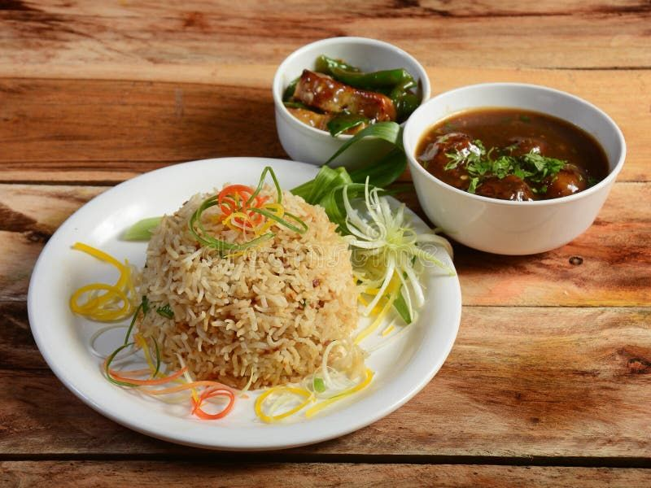

Home
Veg Fried Rice

Veg Fried Rice is a quick and flavourful Indo-Chinese dish
prepared with cooked rice, colourful vegetables, and
savoury sauces.
Recipe Information
- Preparation Time: 10 minutes
- Cooking Time: 15 minutes
- Total Time: 25 minutes
- Servings: 2 people
- Difficulty: Easy
Ingredients
- 2 cups cooked and cooled rice
- 1 small onion, chopped
- 1 small carrot, finely chopped
- 1/2 cup chopped cabbage
- 1/2 capsicum, chopped
- 2 cloves garlic, minced
- 1 tablespoon soy sauce
- 1 teaspoon vinegar
- 2 tablespoons cooking oil
- Salt and black pepper to taste
- Spring onions for garnishing
Instructions
- Prepare the rice: Cook the rice and let it cool completely.
- Heat the oil: Heat oil in a wok or large pan.
- Sauté garlic: Add minced garlic and cook briefly.
- Add vegetables: Add onion, carrot, cabbage, and capsicum. Stir-fry for 3 minutes.
- Add sauces: Mix in soy sauce, vinegar, salt, and black pepper.
- Add rice: Add cooled rice and toss gently until everything is combined.
- Garnish: Add spring onions and serve hot.
Serving Suggestions
Enjoy Veg Fried Rice with Manchurian, Chilli Paneer, or a spicy dip.
Tips for Perfect Fried Rice
- Use cold, cooked rice to prevent it from becoming mushy.
- Keep the heat high while stir-frying.
- Avoid adding too much sauce, which can make the rice soggy.
Enjoy Your Homemade Fried Rice!
Hot and flavourful vegetable fried rice is ready to eat.